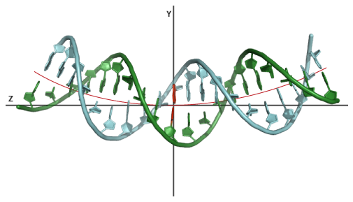
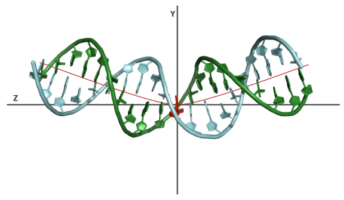
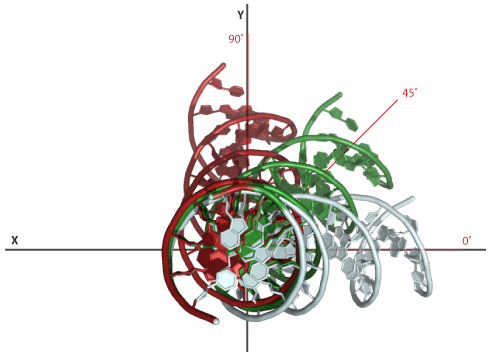
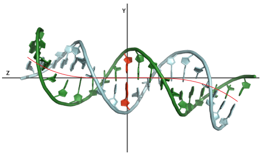
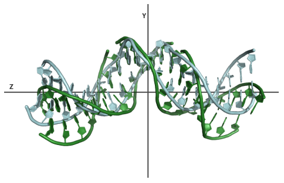

Example projects ready for download as well as pre-loaded web forms are used to better explain several of the core functions.
| Example 1: A bend angle of 60° in a 20 nucleotide BDNA sequence will introduce a 3° bend angle between every successive base-pair. The resulting structure will therefore be evenly bent. The orientation of every angle in Euler-Angle space is not set and will default to 45° throughout the sequence. |
 |
| View model Download results Pre-loaded web form |
| Example 2: A bend angle of 30°, in the same structure as example 1, spanning a zone of 3 nucleotides from base-pair 9 to 12, will introduce a 10° bend between base-pair 9-10, 10-11, 11-12 and 12-13. This will kink the structure in the center. The orientation of every angle in Euler-Angle space is not set and will default to 45° throughout the sequence. |
 |
| View model Download results Pre-loaded web form |
| Example 3: Again a 60° bend in the structure of example 1. This time however we will change the orientation of the bend in Euler-Angle space. To illustrate the effect we generate multiple models spanning a range from 0-90 ° with steps of 45°. This will generate bent structure with an orientation of 0°, 45° and 90° relative to the reference base-pair. |
 |
| View model Download results Pre-loaded web form |
| Example 4: An example of modelling using the Local mode. BDNA model generated with a custom sequence of bend angles and associated orientation. The bend angle sequence was: 2,2,3,3,6,6,3,3,2,1,1,2,3,3,6,6,3,3,2,2 the orientation sequence was: 90,80,70,60,50,40,30,20,10,0,180,190,200,210,220,230,240,250,260,270. |
 |
| View model Download results Pre-loaded web form |
| Example 5: This example illustrates the use of a base-pair(step) parameter as start point for modelling. The parameter file representing the conformation of the DNA in the intron-encoded endonuclease I-PPOI/DNA complex (PDB-id:1A73) is used as input. The DNA in this complex is heavily kinked in the center. Using the server we will generate a set of models of this structure all having a different bend angle in the center. The settings: modelling mode is set to "Global", a bend angle range of 10-50, stepsize of 10, default orientation and a bend zone of 8-14. Using the "view model" link you can view the original heavily kinked structure of the DNA in complex and one of the models having a kink of 10°. This example illustrates that the server is capable of making changes to a specific region of the DNA while preserving the conformation of the remaining part of the structure. |
 |
| View Model Download results Download parameter file |
| Dihedral angle | B-form | A-form |
| C1′-C2′-C3′-C4′ | -34.9 +/- 0.0 | 37.053 +/- 0.0 |
| C5′-C4′-C3′-C2′ | -86.4 +/- 0.0 | -155.59 +/- 0.0 |
| C1′-O4′-C4′-C5′ | 106.4 +/- 0.0 | 144.26 +/- 0.0 |
| Dihedral angle | B-form | A-form |
| Aplha O3′-P-O5′-C5′ | -63.6 +/- 6.0 | -70.0 +/- 50.0 |
| Beta P-O5′-C5′-C4′ | 176.0 +/- 7.0 | 180.0 +/- 50.0 |
| Gamma O5′-C5′-C4′-C3′ | 51.4 +/- 7.0 | 60.0 +/- 35.0 |
| Delta C5′-C4′-C3′-O3′ | 128.0 +/- 13.0 | 81.0 +/- 20.0 |
| Epsilon C4′-C3′-O3′-P | -171.7 +/- 3.7 | 180.0 +/- 35.0 |
| Zeta C3′-O3′-P-O5′ | -103.8 +/- 4.0 | -85.0 +/- 50.0 |